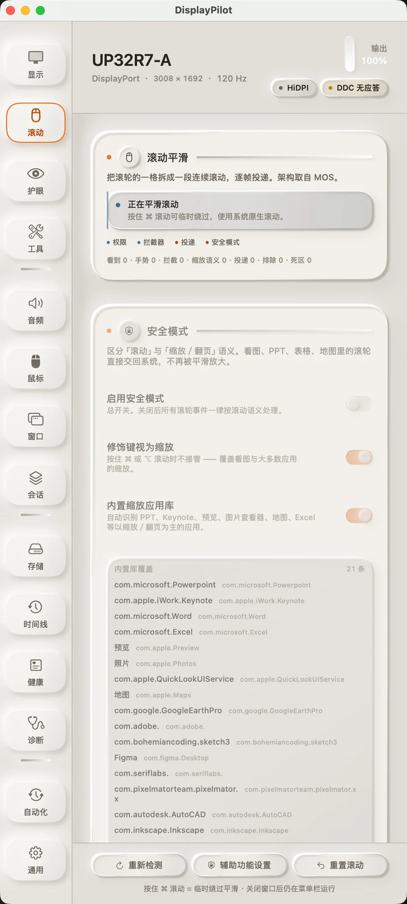

01 · Smooth scrolling
One notch, split into a stroke
A wheel notch stops being a single jump. Events are accumulated, then delivered on every display refresh — each frame emitting pending × (1 − e^(−dt/τ)). Because the decay is driven by elapsed time rather than by frame count, 60 Hz and 144 Hz feel the same. In our offline benchmark, the first frame at 120 Hz improved from 3 points to 9, and time-to-90% fell from 158 ms to 133 ms.
Windows that treat the wheel as a precision input or a zoom control — terminals, image viewers, slide decks — are handed back to the system by default. Hold ⌘ at any time to return to native scrolling. Smoothing ships off: it never takes over your wheel unless you turn it on. The interface keeps four live counters — seen, gesture, intercepted, delivered — so when a new mouse misbehaves, you can see exactly which layer is dropping it.
